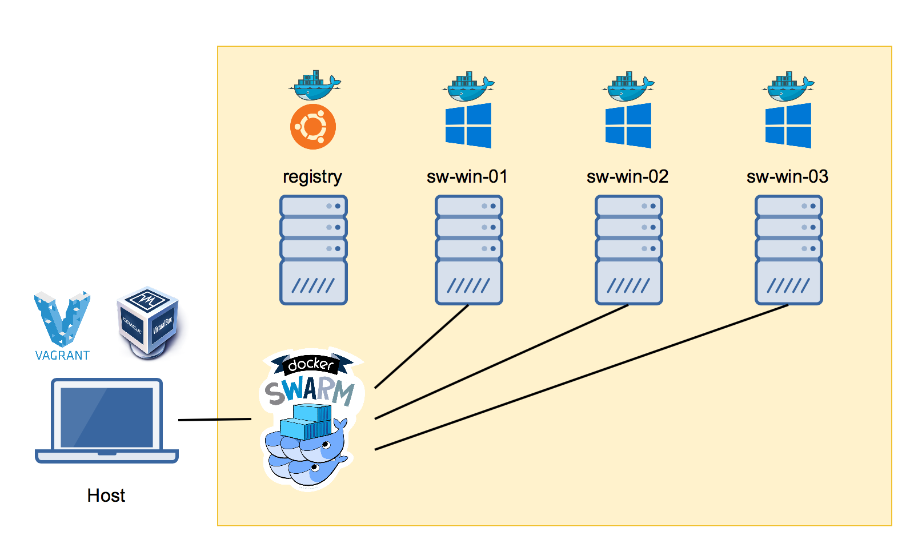
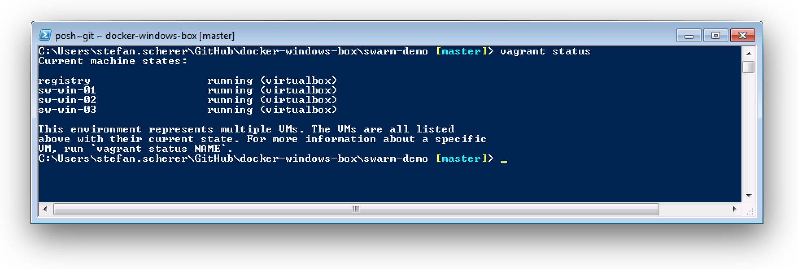
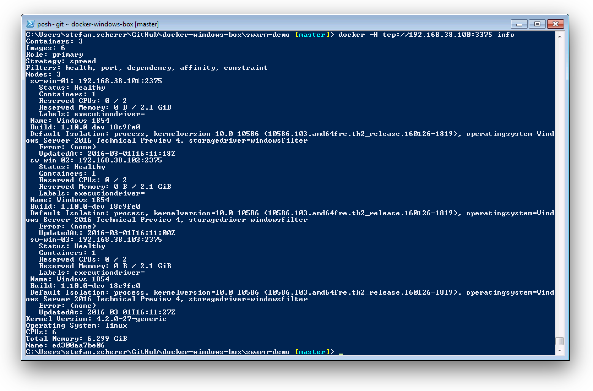
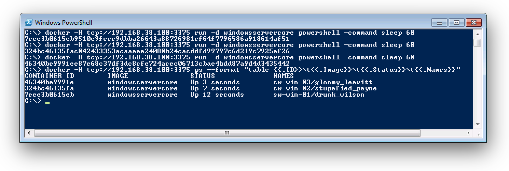

At the DockerCon EU 2015 Arnaud Porterie showed us a Docker Swarm between a Linux and a Windows Docker Engine. In this blog post I explain how to set up a Windows Docker Swarm. I use this setup for demonstration purposes, so the VM's are running locally on my laptop.
At the time of writing there is no docker-machine driver to create the Windows Docker VM's. And my laptop at work is still running with Windows 7, so I have chosen VirtualBox as a local hypervisor instead of Hyper-V.

As you can see in the diagram there also is a private Docker registry. I just want to show you that saving and restoring Windows Docker images is just as easy as on Linux.
A laptop with 16GB memory is capable of running this setup. With less memory, just run only two of the Windows VM's and reduce the memory setting.
Setup your host
If you like to follow this tutorial you need some tools on your host machine. Pleas keep in mind that VirtualBox does not work with Hyper-V on the same machine. My preferred way to setup a Windows machine is by install the software with Chocolatey. So these are the steps needed for the host tools:
iex ((new-object net.webclient).DownloadString('https://chocolatey.org/install.ps1'))
choco install -y virtualbox
choco install -y vagrant
choco install -y packer
choco install -y docker
Build the Vagrant box
Before spinning up the swarm you have to build the Windows Server 2016 VM with Docker installed. As I'm a big fan of automation I do not click through the installers, but use Packer and Vagrant to build and run local VM's.
Before running Packer you should register to the technical preview evaluation and accept the license for the Windows Server ISO file.
After that just clone my Packer templates and build the VirtualBox VM with
git clone https://github.com/StefanScherer/packer-windows
cd packer-windows
packer build --only=virtualbox-iso windows_2016_docker.json
Now add the Vagrant box to the local list of baseboxes with
vagrant box add windows_2016_docker windows_2016_docker_virtualbox.box
Build the Docker swarm
The next step is also very easy. We clone the repo with the Vagrantfile for the Docker swarm and spin up all boxes.
git clone https://github.com/StefanScherer/docker-windows-box
cd docker-windows-box
cd swarm-demo
vagrant up --provider virtualbox
One after another the VM's are booted and provisioned with the shell scripts provided in the scripts folder.
registry
The Linux box registry is used for the Docker Swarm manager and a Docker registry.
- The swarm manager is using a token in
config/swarm-token. Edit this as you like. - The registry is using the
registry-v2folder on your host to store the Docker images.
sw-win-01 ...
The Windows Server 2016 TP4 machines that spin up a Swarm container to join the Docker Swarm. The Docker Engines have a connection to the insecure registry running at registry:5000.
Up and running
After a while all VM's are up and running and you can see the status with vagrant status

The Docker Swarm is built and all Windows VM's have joined the swarm. You can check this by connecting with the Docker Client to the Swarm Manager.
docker -H tcp://192.168.38.100:3375 info

Run containers in the swarm
For a very simple demo we now run three containers that are spread over all three Windows Docker Swarm agents.
docker -H tcp://192.168.38.100:3375 run -d windowsservercore powershell -Command sleep 60

As you can see the containers are running on all different Docker nodes sw-win-01 ... sw-win-03.
With the local registry you can push and pull Windows images from it and safe your work. The registry files are stored at your host so it is safe to destroy all VM's if you do not use them.
I hope you have enjoyed this tutorial. In a future blog post I probably show how to build a Windows Docker Swarm in Azure or in Hyper-V.
If you find this blog post useful, just share it with your friends and colleages. Please leave a comment if you have questions or improvements. You can follow me on Twitter @stefscherer